I used Valentin Huen's board designs to make my board in the html5 fab modules. The copper traces were cut with a 1/64" end mill on the Roland Modela. I routed around the traces with four successive offsets to make sure things were sufficiently far apart to solder easily. The board outline was cut with a 1/32" end mill in 3 depth passes.
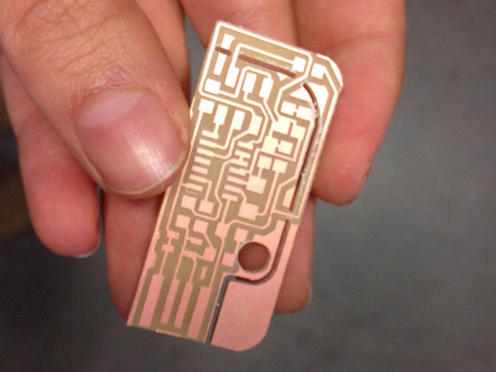I soldered all the components on my board according to this diagram. This was my first time doing surface mount soldering, so it was a little tricky. I found a nice trick for keeping a small component in place was to rest my tweezers on top while soldering the first connection. Without this, the small components were moving around due to the surface tension on the melting solder.
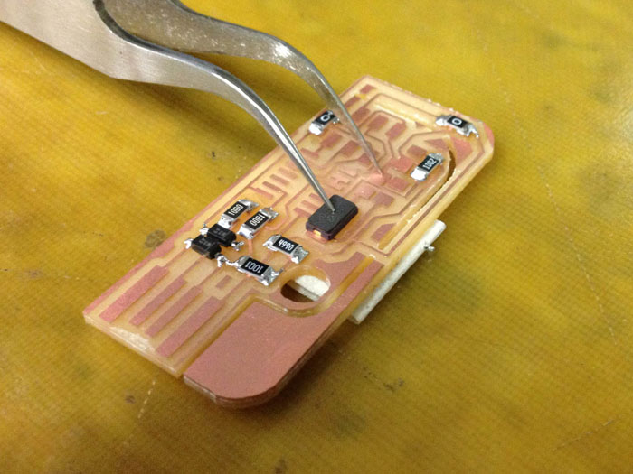 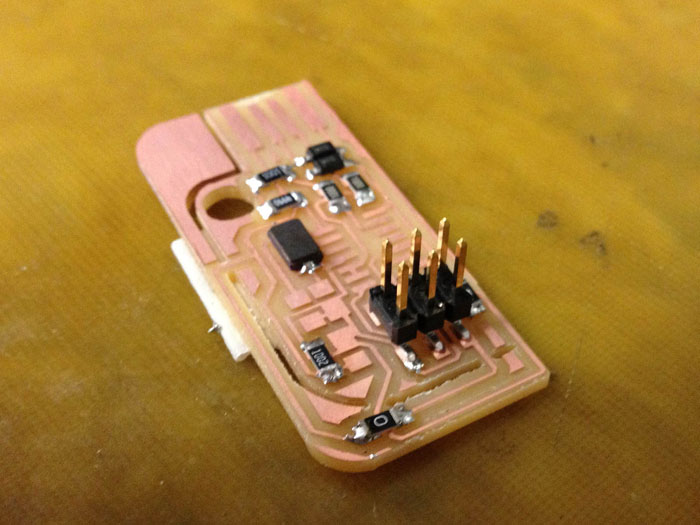{kind=link}
For the larger components I laid down a tiny bit of solder on one pad and stuck the component down. Then I went around and soldered all the remaining leads down before doing a second pass on the first lead. I had good luck with this strategy.
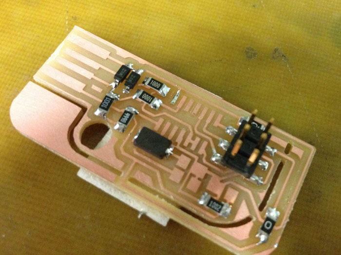 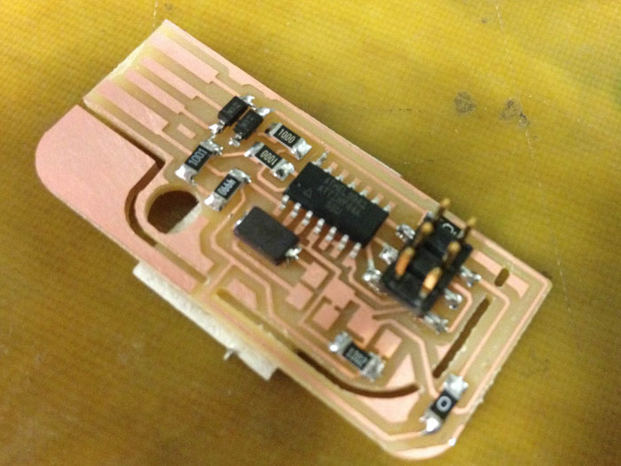 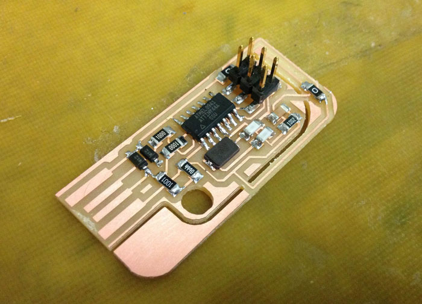After all this, I noticed that there were a few tiny short circuits in my board left over from milling. I tried using a blade to scrape away the copper causing the shorts, but ended up making things much worse. In the end I started from scratch and made a new board. This time I told the fab modules that the width of my 1/64" bit was actually 0.33mm so that it would decide to route away some of the tighter spots in the design. This was a bit of a hack, in the long run it would be good to redo Valentin's traces png to add some extra space between the traces. After milling for the second time, I still had some pieces of leftover copper around my usb connection that worried me. I scraped these pieces off the board with a blade (since I'd already removed the board from the Modela bed). I checked the circuit very carefully this time to be sure there were no shorts.
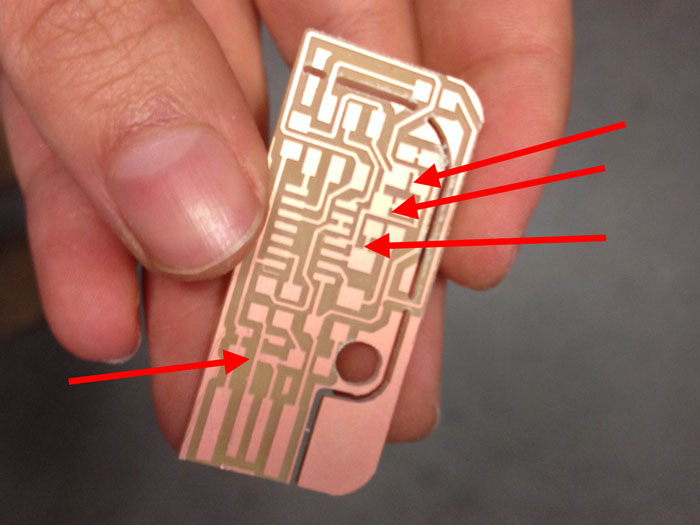 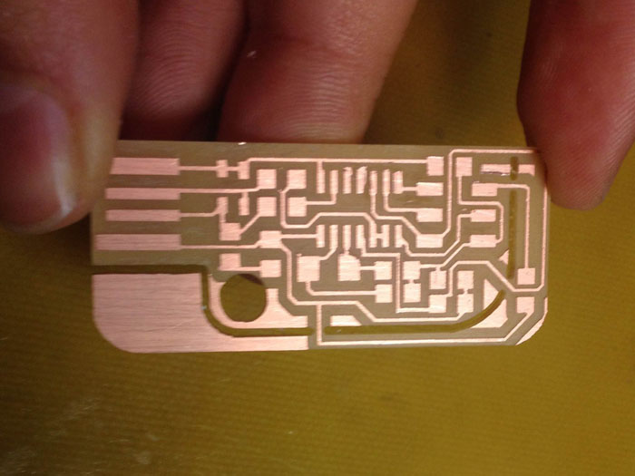To program the board I first had to power it. I snapped off a bit of the PCB to get my board to plug into my usb port.
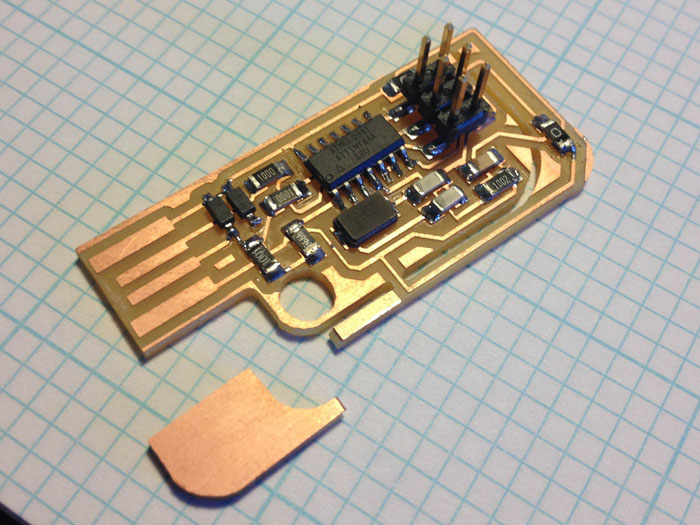I noticed it was a bit loose in my computer so I added some tape to the bottom of the board for support.
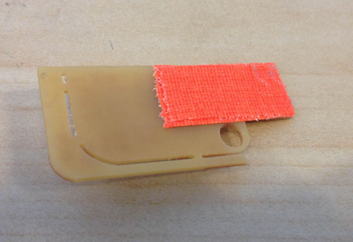 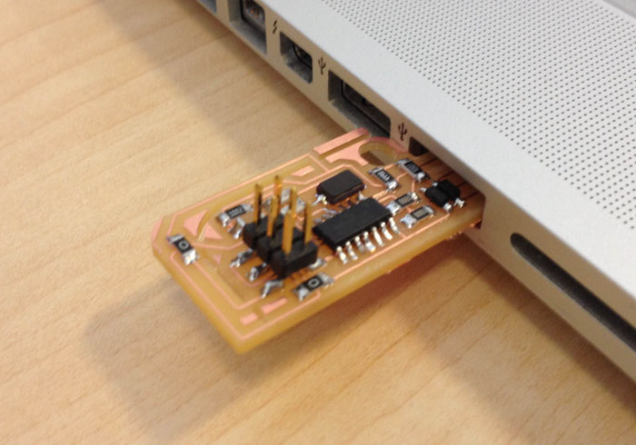I followed these instructions for programming my board. I downloaded the firmware.zip from fab.cba.mit.edu and ran the following lines in the terminal:
make clean
make hex
sudo make fuse
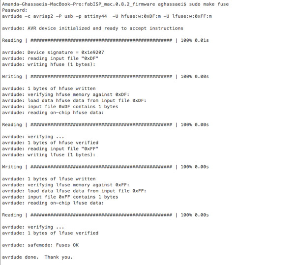sudo make program
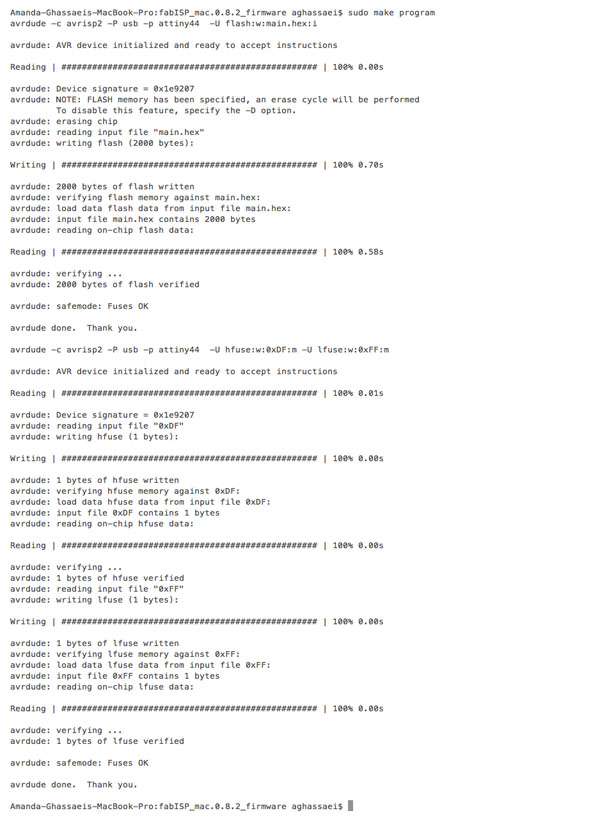Once that completed without any problems I removed the jumpers on the Valentin board by snapping off part of the PCB.
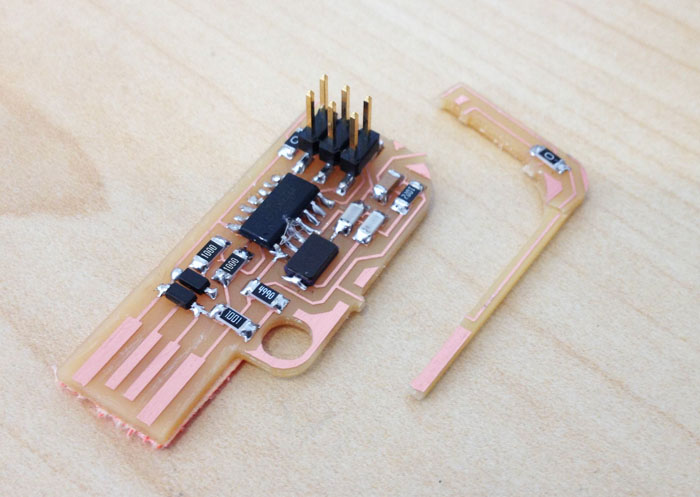I plugged the board back into my machine and ran "system_profiler SPUSBDataType" from the terminal to verify that my board was being recognized by my computer.
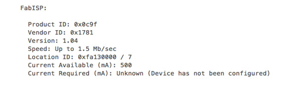